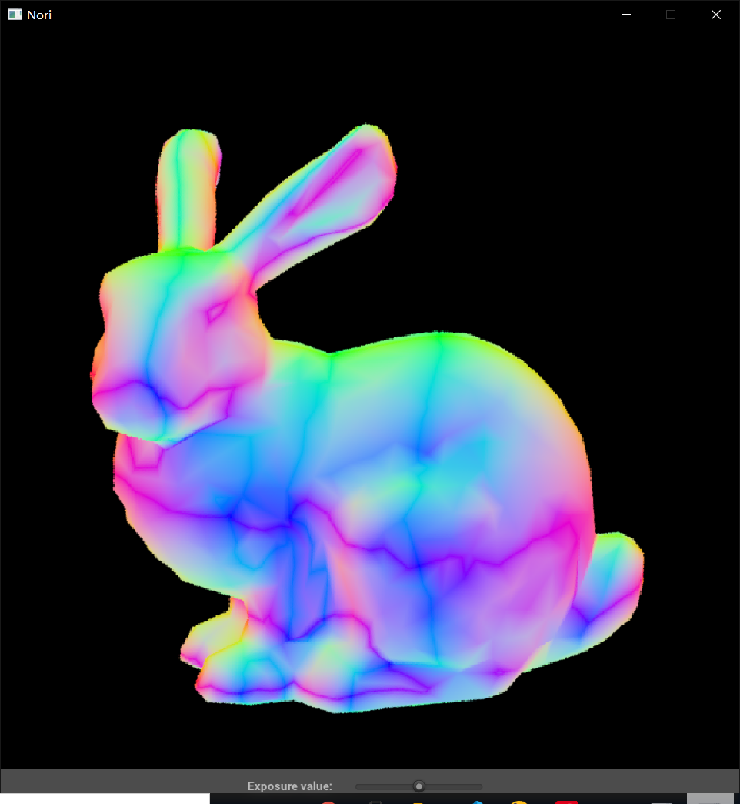

[Nori]作业1
What is Nori
Nori 是一个用 C++ 编写的教学用简单光线追踪渲染器。提供完成洛桑联邦理工学院(EPFL)的高级计算机图形课程(CS440)中的作业所需的基本功能。
开源地址：Github
EPFL-CS440的组织：Github
作业详细描述地址：Nori
不了解这个学校，看起来很nb
既然全都开源出来了，这不学习一波
作业详细描述的Core features里说会在作业3提供高性能BVH，源码里找了半天没找到，怕不是只有他们的学生才能拿到（
Assignment 1
作业1的要求其实就是配个环境，了解下Nori基本用法，比如场景描述文件格式啊，依赖库啊之类的。
Step 1
- git clone工程
- CMake一把梭
- build！
需要注意的是，Github这个地址clone的nori依赖的nano gui有点小问题，主页readme里也给出了解决办法。后来我发现还可以直接用Github这个组织最新版本代替
Step 2
然后我们需要创建一个法线可视化的积分器。
为啥叫积分器？
在 Nori 中，渲染算法被称为积分器，因为它们通常解决数值积分问题。
- 在src文件夹下新建一个normals.cpp
- 从作业网站上CV代码，保存，CMakeLists.txt添加一下刚刚的源码路径
- 从作业网站上CV场景描述
- build，run！

下面还有按钮可以拖动，来调曝光
我用的是VSCode，有CMake插件可以方便的一键build和运行。但是，由于nori需要在命令行中输入场景描述文件所在路径，而插件的一键运行不知道在哪配输入参数。只能创建一个VSCode用的launch.json
Step 3
目前积分器只是简单的输出单色
现在我们让积分器发射射线追踪光线
- 直接从网站CV代码
- build，run！

bunny挺好看的
[Nori]作业1
https://ksgfk.github.io/2021/06/21/Nori-作业1/